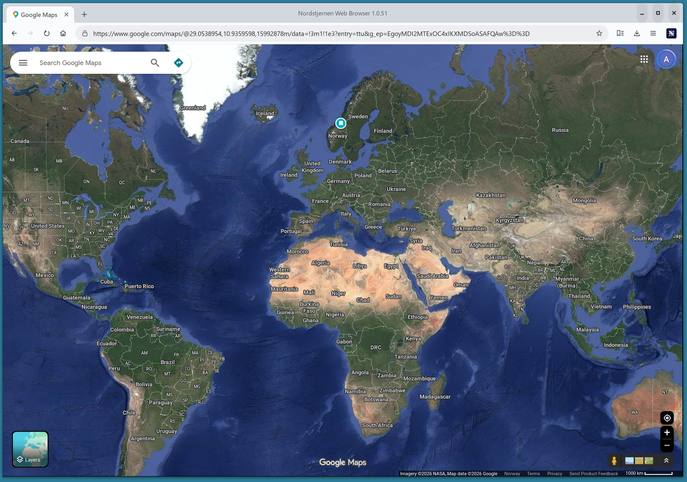

Nordstjernen வலை உலாவி
Nordstjernen என்பது 2026 இல் தொடங்கப்பட்ட, C இல் எழுதப்பட்ட ஒரு சுயாதீன வலை உலாவி; இது HTML மற்றும் CSS தரநிலைகளை ஆதரிப்பதில் கவனம் செலுத்துகிறது. இது Windows, macOS மற்றும் Linux இல் இயங்குகிறது; Android, FreeBSD, NetBSD மற்றும் JVM க்கான பதிப்புகளும் உள்ளன. Nordstjernen நார்வேயில் உருவாக்கப்படுகிறது.


Nordstjernen 1.0.51 வெளியிடப்பட்டது — CSS Typed OM, பகிரப்பட்ட நினைவகத்துடன் WebAssembly இழைகள் (threads), இணைப்புகளுடன் PDF ஏற்றுமதி, மற்றும் ஒரு AppImage. வெளியீட்டுக் குறிப்புகள் »
Northstar 1.0.26 வெளியிடப்பட்டது — WebGL 1 மற்றும் 2, வேலை செய்யும் Gmail, பாதுகாப்புத் திருத்தங்கள் மற்றும் ஒரு AppImage. Northstar பற்றி · வெளியீட்டுக் குறிப்புகள் »
Southstar 1.0.11 வெளியிடப்பட்டது — ஸ்ட்ரீமிங் HTML பாகுபடுத்தி, சிறிய DOM மற்றும் நிகழ்நேர Web Audio. Southstar பற்றி · வெளியீட்டுக் குறிப்புகள் »
HTML தரநிலை. நடத்தை மற்றொரு உலாவியுடன் அல்ல, பிரிவு வாரியாகத் தரநிலை உரையுடன் ஒப்பிட்டு அளவிடப்படுகிறது: WHATWG HTML தரநிலையின் 141 வரிசைகள் முழுமையாகச் செயல்படுத்தப்பட்டுள்ளன, 31 பகுதியளவில், விடுபட்டவை எதுவுமில்லை. இது Web Platform Tests இன் html/, dom/ மற்றும் url/ துணைச் சோதனைகளில் 91.5% மற்றும் css/ இல் 73.2% தேர்ச்சி பெறுகிறது (அக்டோபர் 2026) — காண்க docs/HTML-compatibility.md.
பாதுகாப்பானது. ஒவ்வொரு தாவலும் அதன் சொந்த சாண்ட்பாக்ஸ் செய்யப்பட்ட ரெண்டரர் செயல்முறையில் இயங்குகிறது — Linux இல் seccomp + Landlock, macOS இல் ஒரு Seatbelt சுயவிவரம், Windows இல் செயல்முறை தணிப்புக் கொள்கைகள். JavaScript, WebAssembly என எந்த இயந்திரத்திலும் JIT இல்லை.
குறைந்தபட்சவாதம். உலாவி திட்டத்தின் சொந்த C குறியீடு மற்றும் தலைப்புக் கோப்புகளின் சுமார் 296,000 வரிகளைக் கொண்டது, சேர்க்கப்பட்ட வெளி நூலகங்களையும் உருவாக்கப்பட்ட கோப்புகளையும் தவிர்த்து — ஒரு நபர் தொடக்கம் முதல் முடிவு வரை படித்துத் தணிக்கை செய்யும் அளவுக்குச் சிறியது.
திறன் வாய்ந்தது. பாதுகாப்பான Rust இல் அதன் சொந்த HTML5 பாகுபடுத்தி, heap-வலுப்படுத்தப்பட்ட QuickJS, இழைகளுடன் (threads) WebAssembly, CSS Typed OM, WebGL 1 & 2 மற்றும் WebGPU, Service Workers மற்றும் Streams. பக்கத்துக்குள்ளேயே <video> — MPEG-1, WebM, மற்றும் இயக்க முறைமையின் டிகோடர்கள் வழியாக MP4 — HLS, DASH மற்றும் வசனங்களுடன், கூடவே SMIL அசைவூட்டத்துடன் SVG, MathML மற்றும் ஒரு PDF.js பார்வையாளர்.
தானியக்கம். nordstjernen --mcp ஒரு உள்ளூர் முகவரைச் சாளரத்தைப் படிக்கவும் இயக்கவும் அனுமதிக்கிறது — அனுமதி தரும் வரை முடக்கம், loopback மட்டும், டோக்கன் மூலம் அங்கீகரிக்கப்பட்டது — மேலும் --webdriver Selenium மற்றும் பிற சோதனைக் கட்டமைப்புகளுக்கு W3C WebDriver ஐ வழங்குகிறது. உலாவியிலேயே AI உதவியாளர் எதுவும் இல்லை.
அச்சிடுதல். Ctrl+P பக்கத்தை @media print, @page மற்றும் பக்க முறிவுகளின்படி தாள்களாகப் பிரித்து, அவற்றை இயக்க முறைமையின் சொந்த அச்சு உரையாடலிடம் ஒப்படைக்கிறது. --export=pdf:FILE அச்சுப்பொறி இல்லாமலேயே அதே பக்கங்களை, இணைப்புகளுடன், ஒரு PDF ஆக எழுதுகிறது.
வேகமானது. web-text-lib, அதாவது மூலக் களஞ்சியத்துக்குள் உள்ள Pango கிளை, வடிவமைக்கப்பட்ட உரையை வெவ்வேறு தளவமைப்புகளுக்கு இடையே தற்காலிகமாகச் சேமித்து, அட்டவணைகள் நிறைந்த பக்கங்களில் தளவமைப்பு நேரத்தை 24% குறைக்கிறது. HTTP/3 மேம்படுத்தல்கள் இணைப்பு நேரமுடிவில் சிக்கிக் கொள்ளாமல் alt-svc தற்காலிகச் சேமிப்பு வழியாகச் செல்கின்றன: Acid3 15.5 வினாடிகளுக்குப் பதிலாக 2.2 வினாடிகளில் ஏற்றப்படுகிறது.
தனிப்பட்டது. டெலிமெட்ரி இல்லை, புதுப்பிப்பு பிங் இல்லை, மேலும் client hints இல் Chrome அல்ல, Nordstjernen என்ற பெயரே இருக்கும். மூன்றாம் தரப்பு குக்கீகள் தடுக்கப்படுகின்றன, இணைப்புகளிலிருந்து கண்காணிப்பு அளவுருக்கள் நீக்கப்படுகின்றன, மேலும் Safe Browsing Google க்கு 4-பைட் hash முன்னொட்டை மட்டுமே அனுப்புகிறது, முகவரியை ஒருபோதும் அல்ல.
கட்டற்ற மென்பொருள். 1.0.28 முதல் Nordstjernen இரட்டை உரிமம் பெற்றது: உங்கள் விருப்பப்படி GNU GPL, பதிப்பு 3 அல்லது அதற்குப் பிந்தையது அல்லது Nordstjernen Source License 1.0 இன் கீழ் இதைப் பயன்படுத்தலாம், மாற்றலாம், மறுவிநியோகம் செய்யலாம்.
Northstar உலாவி
Northstar என்பது Nordstjernen இன் குறைந்தபட்ச உடன்பிறப்பு, GNU GPL, பதிப்பு 3 அல்லது அதற்குப் பிந்தையது உரிமத்தின் கீழ்: ஒரு சாளரம், ஒரு பக்கம், ஒரு செயல்முறை, சுமார் 234,000 வரி அசல் C இல் உருவாக்கப்பட்டது. இதில் தாவல்கள், தாவலுக்கான தனி ரெண்டரர் செயல்முறைகள் மற்றும் WebGPU இல்லை; ஆனால் WebGL 1 மற்றும் 2, ஸ்ட்ரீமிங் வீடியோ, அச்சிடுதல், ஒரு PDF.js பார்வையாளர், WebExtensions, Google Safe Browsing மற்றும் 40 மொழிகளில் UI உள்ளன, Linux இல் Landlock மற்றும் seccomp சாண்ட்பாக்ஸுக்குப் பின்னால் இயங்குகிறது. Linux இதன் முதன்மைத் தளம்; இது macOS, BSD கள் மற்றும் Windows இலும் இயங்குகிறது; Windows க்கு இது Microsoft Store இல் கிடைக்கிறது.
Northstar இன் முழு ஆவணங்களைப் படிக்கவும் » · அல்லது மூன்று உலாவிகளும் எவ்வாறு வேறுபடுகின்றன என்பதற்குக் கீழே உள்ள ஒப்பீட்டு அட்டவணையைப் பார்க்கவும்.
Southstar உலாவி
Southstar என்பது Rust க்கு மாற்றப்பட்ட Nordstjernen; இயங்கிக்கொண்டிருக்கும்போதே தொகுதி தொகுதியாக மாற்றப்பட்டது: அக்டோபர் 2026 முதல் அதன் சொந்தக் குறியீடு முழுவதும் Rust — 164 crates இல் சுமார் 390,000 வரிகள் — Cargo மூலம் மட்டுமே உருவாக்கப்படுகிறது. பக்க JavaScript Boa இல் இயங்குகிறது; இது JIT இல்லாத Rust மொழிபெயர்ப்பி, test262 முழுவதிலும் தேர்ச்சி பெறுகிறது; HTML பாகுபடுத்தல், உரைத் தளவமைப்பு, TLS மற்றும் WebAssembly ஆகியவையும் Rust தான். Southstar 1.0.11 Microsoft Store இலும், crates.io இலும் கிடைக்கிறது, அதன் Linux தொகுப்புகள் GitHub இல் உள்ளன; மாற்றம் எப்படிச் செய்யப்பட்டது என்பது docs/rust-port.md இல் விளக்கப்பட்டுள்ளது.
Weststar உலாவி
Weststar குடும்பத்தின் புதிய உறுப்பினர், நவம்பர் 2026 இல் தொடங்கப்பட்டது: GTK 4 இடைமுகமும் Cairo ரெண்டரரும் மாற்றப்பட்ட Northstar இன் ஒரு கிளை. இதன் சாளரம் SDL3; பக்கங்கள், உலாவியின் இடைமுகம் மற்றும் உரை ஆகியவை Weststar இன் சொந்த 2D ராஸ்டரைசரால் வரையப்படுகின்றன; பக்க இயந்திரம் Northstar உடையது. இது Linux மற்றும் Windows இல் இயங்குகிறது, GNU GPL, பதிப்பு 3 அல்லது அதற்குப் பிந்தையது உரிமத்தின் கீழ் உள்ளது, தற்போதைக்கு WebGL, WebGPU, <video> மற்றும் அச்சிடுதல் இதில் இல்லை. இன்னும் வெளியீடு எதுவும் இல்லை; மாற்றம் எப்படி முன்னேறுகிறது என்பது docs/porting-to-sdl.md இல் உள்ளது.
Nordstjernen வலை உலாவியின் புதுமைகள் பற்றி மேலும் படிக்கவும்.
விவரக்குறிப்புகள்
மூன்று உலாவிகள், ஒரே இயந்திர மரபு. Nordstjernen முதன்மையான பல-தாவல் உலாவி; Northstar GPL உரிமம் பெற்ற குறைந்தபட்ச ஒற்றை-செயல்முறைப் பதிப்பு; Southstar அதே உலாவி, Rust இல் மீண்டும் எழுதப்பட்டது. Northstar இன் SDL3 கிளையான Weststar இன்னும் வெளியிடப்படவில்லை, அது அட்டவணையில் இல்லை.
மூன்று உலாவிகளையும் பார்க்க அட்டவணையைப் பக்கவாட்டில் தள்ளவும்.
| Nordstjernen 1.0.51 | Northstar 1.0.26 | Southstar 1.0.11 | |
|---|---|---|---|
| பதிப்பு | 1.0.51 — 23 நவம்பர் 2026 அன்று வெளியிடப்பட்டது · வெளியீட்டுக் குறிப்புகள் | 1.0.26 — 19 நவம்பர் 2026 அன்று வெளியிடப்பட்டது · வெளியீட்டுக் குறிப்புகள் | 1.0.11 — 20 நவம்பர் 2026 அன்று வெளியிடப்பட்டது · வெளியீட்டுக் குறிப்புகள் |
| தன்மை | முதன்மை உலாவி · பல சாளரங்கள், பல தாவல்கள் | குறைந்தபட்சப் பதிப்பு · ஒரு சாளரத்துக்கு ஒரு பக்கம், தாவல்கள் இல்லை | Rust பதிப்பு · பல சாளரங்கள், பல தாவல்கள் |
| மொழி | C · ~296 kLOC · 1.0.47 முதல் HTML5 மற்றும் URL பாகுபடுத்திகள் பாதுகாப்பான Rust இல் · GTK 4 ஷெல் · JNI வழியாக Java/JVM பிணைப்பு · முழுமையாகத் தணிக்கை செய்யக்கூடியது | C · ~234 kLOC அசல் குறியீடு · GTK 4 ஷெல் · முழுமையாகத் தணிக்கை செய்யக்கூடியது | Rust · 164 crates இல் ~390 kLOC · Cargo மூலம் உருவாக்கப்படுகிறது · GTK 4 ஷெல், 1.0.9 முதல் முழுமையான Java Swing ஷெல் · இணைக்கும் கணினி நூலகங்களில் மட்டுமே C |
| கட்டமைப்பு | தாவலுக்கு ஒரு செயல்முறை — ஒவ்வொரு தாவலும் அதன் சொந்த சாண்ட்பாக்ஸ் செய்யப்பட்ட ரெண்டரர் செயல்முறையில், IPC + பகிரப்பட்ட-நினைவக ஓடுகள் | ஒற்றைச் செயல்முறை — உலாவிச் செயல்முறைக்குள் பக்க இயந்திரம் அதன் சொந்த இழையில் | தாவலுக்கு ஒரு செயல்முறை — ஒவ்வொரு தாவலும் அதன் சொந்த சாண்ட்பாக்ஸ் செய்யப்பட்ட ரெண்டரர் செயல்முறையில், IPC + பகிரப்பட்ட-நினைவக ஃப்ரேம்பஃபர்கள் |
| JavaScript | Fabrice Bellard இன் QuickJS இன் களஞ்சியத்துக்குள் உள்ள, heap-வலுப்படுத்தப்பட்ட கிளை — பைட்கோடு மொழிபெயர்ப்பி, JIT இல்லை, அதன் heap ஒதுக்கப்பட்ட முகவரி-வரம்புக் கூண்டுக்குள் · Temporal மற்றும் Intl · 1.0.50 இல் quickjs-ng கைவிடப்பட்டதிலிருந்து இதுவே ஒரே இயந்திரம் |
quickjs-ng 0.18.0+, dce8c0b இல் — பைட்கோடு மொழிபெயர்ப்பி, JIT இல்லை · அசல் QuickJS ஐ -Djs_engine=quickjs மூலம் தேர்ந்தெடுக்கலாம் |
Boa (களஞ்சியத்துக்குள் உள்ள கிளை) — Rust மொழிபெயர்ப்பி, JIT இல்லை · staging க்கு வெளியே உள்ள அனைத்து 52,133 test262 சோதனைகளிலும் தேர்ச்சி |
| தளங்கள் | linux (gtk) · alpine (musl) · windows · macos · android · java/jvm · npm மற்றும் pip · freebsd · netbsd | linux · macos · windows · BSD கள் | linux · windows · macos · freebsd · netbsd · java/jvm · npm மற்றும் crates.io |
| உரிமம் | 1.0.28 முதல் இரட்டை உரிமம், உங்கள் விருப்பப்படி: GNU GPL v3 அல்லது பிந்தையது — கட்டற்ற மென்பொருள் · அல்லது NSL-1.0 → 10 ஆண்டுகளுக்குப் பிறகு MIT, Functional Source License ஐ அடிப்படையாகக் கொண்டது | GNU GPL v3 அல்லது பிந்தையது — கட்டற்ற மென்பொருள் | Nordstjernen போன்ற அதே இரட்டை உரிமம்: GNU GPL v3 அல்லது பிந்தையது அல்லது NSL-1.0, உங்கள் விருப்பப்படி |
முழு விவரக்குறிப்புகள் » — HTML மற்றும் CSS, உரை, படங்கள், ஊடகம், அச்சிடுதல், வலையமைப்பு, பலப்படுத்தல், தனியுரிமை மற்றும் தரநிலைகள்.
பதிவிறக்கம்
சமீபத்திய வெளியீடு: Nordstjernen 1.0.51, 23 நவம்பர் 2026 அன்று வெளியிடப்பட்டது. எல்லாத் தளங்களுக்குமானவை, Northstar மற்றும் Southstar ஆகியவை பதிவிறக்கப் பக்கத்தில் உள்ளன.
| Windows | Microsoft Store |
|---|---|
| Android | Google Play |
| macOS | nordstjernen-1.0.51-macos-arm64.dmg |
| Debian 13 | nordstjernen_1.0.51_debian13_amd64.deb |
| Ubuntu 26.04 | nordstjernen_1.0.51_ubuntu26.04_amd64.deb |
| Fedora 45 | nordstjernen-1.0.51-1.fc45.x86_64.rpm |
| Linux (கையடக்கப் பதிப்பு) | nordstjernen-1.0.51-linux-x86_64.zip |
| Linux (AppImage) | nordstjernen-1.0.51-x86_64.AppImage |
| மூலக் குறியீடு | 1.0.51.tar.gz |
Nordstjernen ஐப் பதிவிறக்குக »
மொழிகள்
English · 中文 · हिन्दी · Español · Français · العربية · বাংলা · Português · Русский · اردو · Bahasa Indonesia · Deutsch · 日本語 · Kiswahili · मराठी · తెలుగు · Türkçe · தமிழ் · Tiếng Việt · 한국어 · Norsk